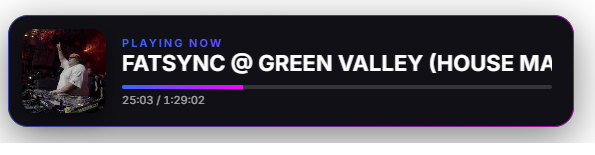
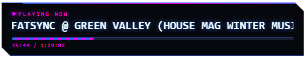
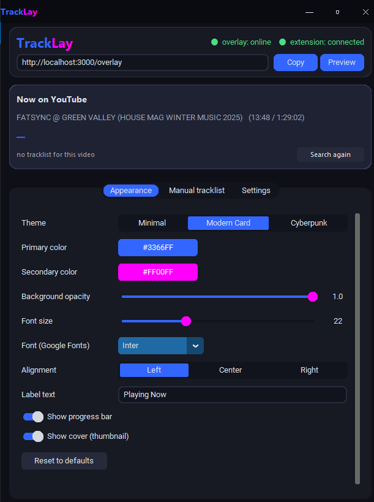
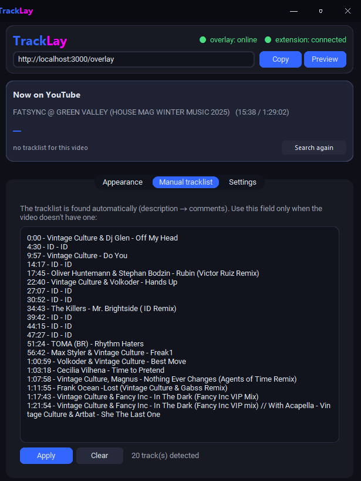
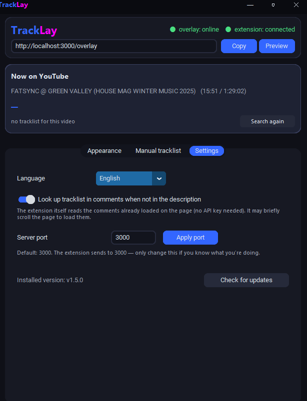

POUR LES STREAMERS QUI DIFFUSENT DE LA MUSIQUE
Votre stream affiche
toujours le bon titre.
TrackLay identifie la chanson en cours de lecture sur YouTube et affiche le titre, l'artiste et la progression directement dans votre overlay OBS — sans rien taper, morceau après morceau.
Extension gratuite sur le Chrome Web Store · App gratuite pour Windows
Comment ça marche
Trois étapes, aucune saisie
Une fois installé, tout se déroule automatiquement — il vous suffit de lancer la vidéo.
Installez l'extension
TrackLay Sync tourne discrètement dans Chrome ou Brave et se contente de lire quelle vidéo est en lecture sur YouTube.
Ouvrez l'app TrackLay
Elle reçoit la vidéo depuis l'extension, trouve la tracklist et construit l'overlay — entièrement automatique.
Ajoutez-le à OBS
Collez le lien de l'overlay dans une Browser Source. C'est fait — votre stream affiche désormais le bon titre.
Fonctionnalités
Conçu pour les long sets
Chaque détail pensé pour les streams musicaux — d'un simple morceau à un set de deux heures.
Conçu pour les long sets
Contrairement aux overlays musicaux classiques, TrackLay est conçu pour les long sets. Il extrait automatiquement la tracklist complète directement depuis la description YouTube ou les commentaires épinglés, gardant votre stream parfaitement synchronisé pendant des heures.
Tracklist automatique
TrackLay lit la description de la vidéo et, si nécessaire, les commentaires, pour identifier chaque morceau du set.
Toujours synchronisé
L'extension suit le temps de lecture réel de la vidéo, si bien que le morceau change au bon moment — même après un set d'une heure.
3 thèmes prêts à l'emploi
Minimaliste, Card avec pochette et barre de progression, ou Cyberpunk néon. Changez en un clic.
Vos couleurs, vos polices
Ajustez couleurs, taille, police (avec Google Fonts) et alignement directement dans l'app — sans toucher au code.
Extension légère
Elle ne lit que la vidéo en cours de lecture. Pas de Tampermonkey, pas de configuration — installez-la et ça fonctionne.
App native pour Windows
Une seule fenêtre, légère en mémoire — elle ne concurrencera pas le reste de votre stream pour les ressources.
Thèmes
Choisissez l'apparence de l'overlay
Trois styles prêts à l'emploi — chacun entièrement personnalisable en couleur et en police.


Captures d'écran
Découvrez TrackLay en action
Un aperçu de l'application réelle — réglages d'apparence, détection automatique de la tracklist et préférences générales.



Prêt à ne plus jamais
taper le nom d'une chanson en stream ?
Deux étapes : installez l'extension, ouvrez l'app. TrackLay s'occupe du reste.